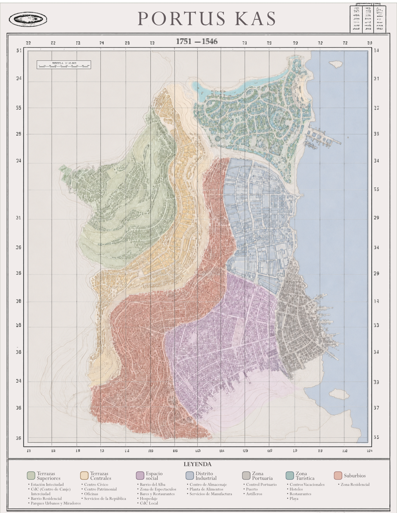

Plano de la ciudad

Este plano permite recorrer la estructura urbana de Portus Kas y situar sus distintos sectores dentro de la geografía de la ciudad.
Cartografía · Portus Kas
Una representación cartográfica de Portus Kas, ciudad de la República de Zonaris.

Este plano permite recorrer la estructura urbana de Portus Kas y situar sus distintos sectores dentro de la geografía de la ciudad.